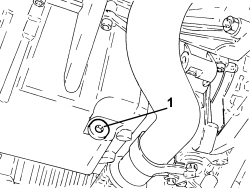
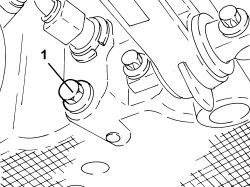
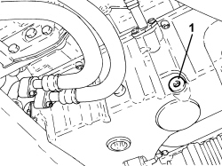

1020A30 ENGINE OIL DRAIN PLUG - REPLACE
- Path
- Procedures > 10 ENGINE > 1020 CRANKCASE SUMP AND COVERS > 1020A CRANKCASE OIL SUMP > 1020A30 ENGINE OIL DRAIN PLUG - REPLACE
- Kind
- repair procedure (removal / refitting; the operation number is the code)
- Applies to
- engines: 1.9 JTS, 2.2 JTS, 3.2 JTS, 1.9 JTD 8V, 1.9 JTD 16V, 2.4 JTD 20V; all production periods
- Interactive page
- https://sloeber94.github.io/elrnDB/alfa/159/en/#/939010430
Applies to: engines: 1.9 JTD 8V, 1.9 JTD 16V; all production periods

Applies to: engines: 1.9 JTS, 2.2 JTS; all production periods
Applies to: engines: 3.2 JTS; all production periods
- Position the vehicle on a lift.
Op. 7055B54 UNDER ENGINE PROTECTION/GUARD - R.R.
1. Unscrew the engine oil drain plug.

Applies to: engines: 3.2 JTS; all production periods
- Tighten the new engine oil drain plug to the recommended torque.
Component | Fastening | dia | Value (daNm) | Validity |
|---|---|---|---|---|
Engine oil drain plug | - | - | 2.0 | 3.2 JTS |
Op. 0010T11 ENGINE OIL - CHECK LEVEL AND TOP UP, IF NECESSARY
Op. 7055B54 UNDER ENGINE PROTECTION/GUARD - R.R.
- Remove the vehicle from the lift.
Applies to: engines: 2.4 JTD 20V; all production periods

Topics linked from this page (2)
- 0010T11 ENGINE OIL - CHECK LEVEL AND TOP UP, IF NECESSARY
- 7055B54 UNDER ENGINE PROTECTION/GUARD - R.R.